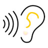
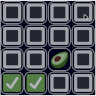

เล่น กข is an example of a simple game to help to remember Thai alphabet. Player can try to catch the letters by tapping them (clicking with a mouse on PC). It is not finished yet but is playable.
เล่น กข is an example of a simple game to help to remember Thai alphabet. Player can try to catch the letters by tapping them (clicking with a mouse on PC). It is not finished yet but is playable.
เล่น กข
เล่น กข is an example of a simple game to help to remember Thai alphabet. Player can try to catch the letters by tapping them (clicking with a mouse on PC). It is not finished yet but is playable.
โดด กข โดด กข is an example of a simple game to help timing skill. Player would try to avoid harm by tapping on screen at the right time (clicking with a mouse on PC).
ดู กข ดู กข is an example of a simple eye test for visual acuity. A very small Landolt ring is shown then it grows larger. Tap the screen to toggle 'freez' and 'grow' mode. Press the matching pattern button below as soon as you can match it. [NB. exerimental stage]
ฟัง กข  ฟัง กข is an example of a simple ear test. A very low volume of a sound at frquencies is produced then it grows louder. Tap the screen as soon as you hear a sound. [NB. development stage]
หาคู่  หาคู่ is a simple memory drill. A set of 4x4 tiles are offered face-down, player to try to find matching pairs -- as quickly as can.
NotesThis game tool aims to collect 'games' of 2 types: